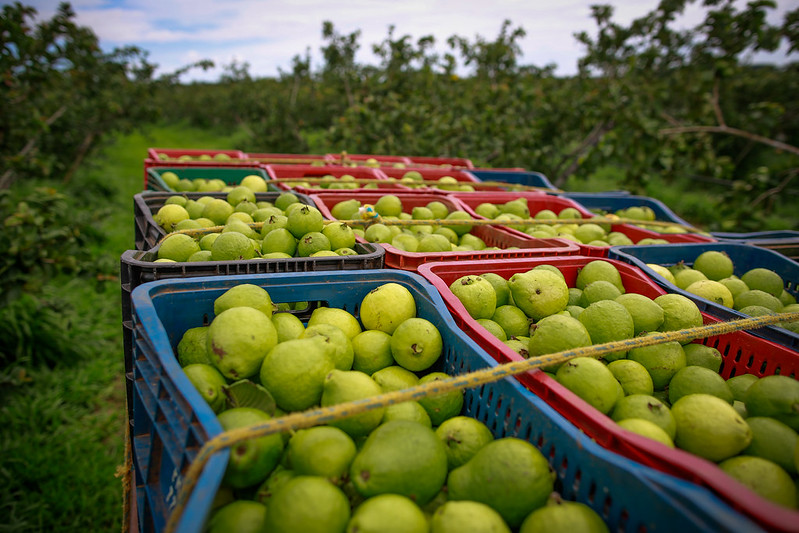
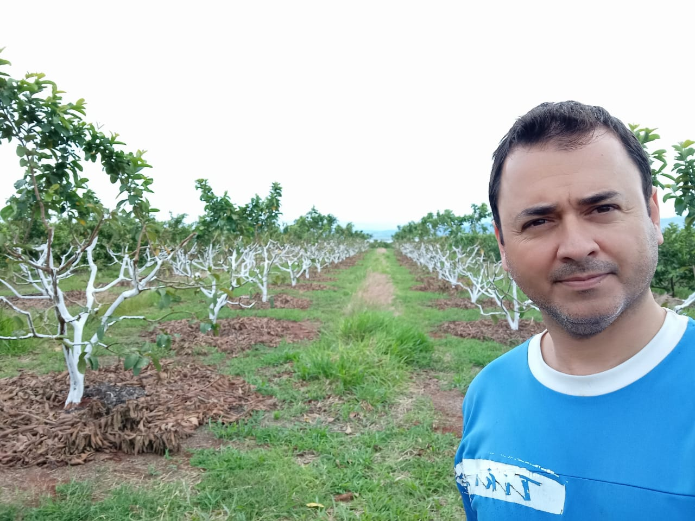

Sobre a Capital da Goiaba e Norte Pioneiro
Aqui você encontrará informações sobre a Capital da Goiaba e do Norte Pioneiro, incluindo sua história, cultura e atrações turísticas.
Sobre o Norte Pioneiro
O Norte Pioneiro Paranaense é uma região do Paraná com 46 municípios que faz conexão com o estado de São Paulo. Segundo o Instituto Paranaense de Desenvolvimento Econômico e Social, no Norte Pioneiro cerca de 49,4% da população é economicamente ativa na agropecuária, indústria e comércio. Entre as produções da agropecuária, destaca-se a goiaba de mesa.
Qual a Importância da Goiaba para o Norte Pioneiro
- Econômico: A goiaba é uma das principais culturas da região, contribuindo significativamente para a economia local. A produção de goiaba gera empregos e renda para agricultores e trabalhadores rurais.
- Agronegócio: A região é conhecida pela produção de goiabas de alta qualidade, o que fortalece o agronegócio local e possibilita a exportação para outras regiões e países.
- Diversificação Agrícola: O cultivo de goiaba ajuda na diversificação da produção agrícola, reduzindo a dependência de outras culturas e melhorando a sustentabilidade econômica dos agricultores.
- Valor Nutricional: A goiaba é rica em vitaminas e minerais, sendo uma importante fonte de nutrientes para a população local. Seu consumo contribui para a saúde e bem-estar dos moradores da região.
- Pesquisa e Desenvolvimento: A região investe em pesquisa e desenvolvimento para melhorar as técnicas de cultivo, aumentando a produtividade e a qualidade da fruta. Esses fatores fazem da goiaba uma cultura de grande relevância para o Norte Pioneiro do Paraná, impactando positivamente a economia, a agricultura e a saúde da população local.
Carlópolis: A Capital da Goiaba
Carlópolis, no estado do Paraná, é uma cidade conhecida como a capital da goiaba de mesa. Essa distinção se deve à produção em larga escala e à alta qualidade das goiabas cultivadas na região. A história da produção de goiaba em Carlópolis começou a se destacar na década de 1990, quando os agricultores locais perceberam o potencial da fruta para o mercado. A combinação de clima favorável, solo fértil e técnicas de cultivo avançadas permitiu que a goiaba se tornasse uma importante fonte de renda para a cidade.
A cidade investiu em infraestrutura e tecnologias para melhorar a produção e a comercialização da goiaba. Foram implementados programas de capacitação para os produtores, que aprenderam a adotar práticas agrícolas mais eficientes e sustentáveis. Além disso, a criação de cooperativas ajudou a fortalecer o setor, facilitando a distribuição e a venda das goiabas. Esses esforços coletivos consolidaram Carlópolis como a capital da goiaba de mesa, reconhecida nacionalmente pela qualidade de suas frutas.
Produtor e policial militar, Juliano Azevedo de Oliveira Bicudo começou a cuidar das terras do pai em 2016, sem nenhuma experiência no campo. Com o apoio da Coac, iniciou o plantio da goiaba e, em 2018, colheu as primeiras frutas. Investiu nas certificações e no processo de ampliação da produção, que hoje contempla uma área de aproximadamente três hectares, com 1,6 mil pés da fruta. Em pouco tempo, comemora os resultados. “A exportação é um excelente negócio. O preço da goiaba fica estável o ano todo, em torno de R$ 5,00 o quilo. Meu objetivo é direcionar 20% da minha produção para o mercado externo”, projeta Bicudo.
